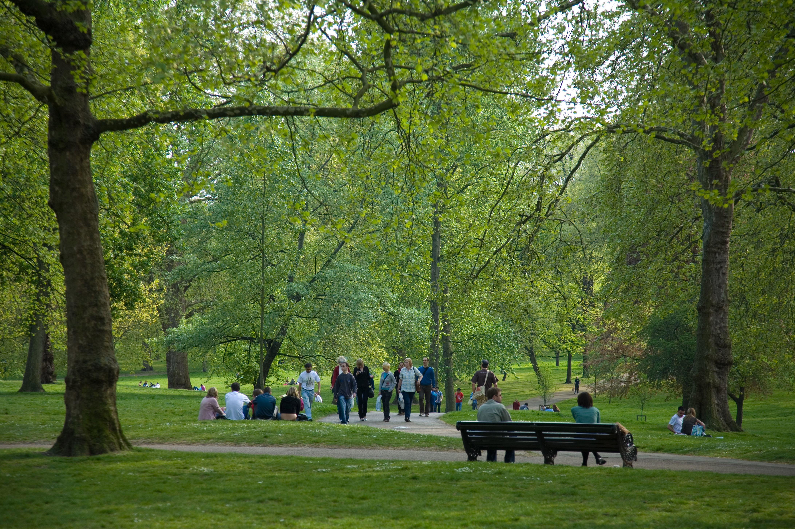

Whether you’re a seasoned hiker or just looking for a peaceful stroll, Green Acres Farm serves as the perfect trailhead for exploring the local landscape. Our property features two miles of curated "Farm Loops"—wide, flat paths that wind through our apple orchards and along the edge of the animal pastures, perfect for families with strollers or those who want to watch the goats while they walk. For the more adventurous, our north gate connects directly to the Biggar Nature Trails, a sprawling network of wooded routes that offer panoramic views of the surrounding valley. These paths range from gentle, shaded canopy walks to more rugged "ridge runs" that are popular with local mountain bikers and birdwatchers alike. No matter which direction you head, you'll find plenty of benches carved from fallen timber where you can sit back, breathe in the fresh country air, and enjoy the quiet sounds of the countryside.
